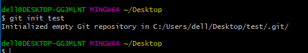
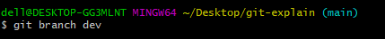
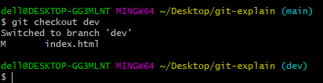
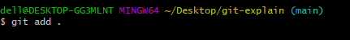
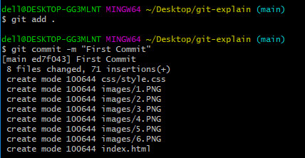

Git Version Control System
What is “version control”, and why should you care? Version control is a system that records
changes to a file or set of files over time so that you can recall specific versions later.
Git is a free and open source distributed version control system designed to handle everything
from small to very large projects with speed and efficiency.
Git is a free and open source distributed version control system designed to handle everything
from small to very large projects with speed and efficiency.
Git Commands
git init:
The git init command creates a new Git repository. Executing git init creates a .git subdirectory in
the current working directory, which contains all of the necessary Git metadata for the new repository.
Open git CLI and move to the directory where you want to create new repository and run the following
command. This makes the git repository having name of 'test'.

git branch:
The git branch command lets you create, list, rename, and delete branches. It doesn’t let you
switch between branches or put a forked history back together again. For this reason, git
branch is tightly integrated with the git checkout
following command will create a branch with the name of dev

git checkout:
The git checkout command lets you navigate between the branches created by git branch.
Checking out a branch updates the files in the working directory to match the version stored in
that branch, and it tells Git to record all new commits on that branch.
Following command will switch the branch from main to dev

git add:
The git add command adds a change in the working directory to the staging area. It tells
Git that you want to include updates to a particular file in the next commit. However,
git add doesn't really affect the repository in any significant way—changes are not actually
recorded until you run git commit.
To add changes, go to your git repository and run the following command

git commit:
The "commit" command is used to save your changes to the local repository.Using the
"git commit" command only saves a new commit object in the local Git repository.
-m Sets the commit's message. Make sure to provide a concise description that helps your teammates (and yourself) understand what happened.
In your git repository, run the git commit -m {message} command.

git push:
git push is most commonly used to publish an upload local changes to a central repository.
After a local repository has been modified a push is executed to share the modifications
with remote team members.